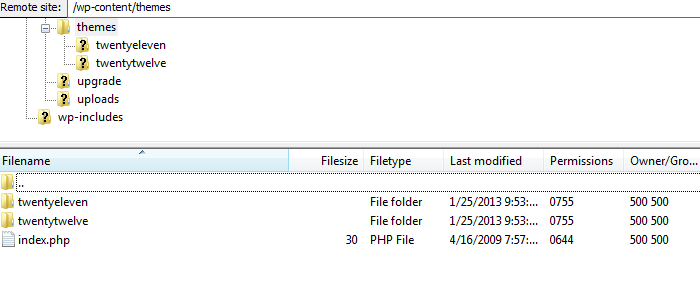
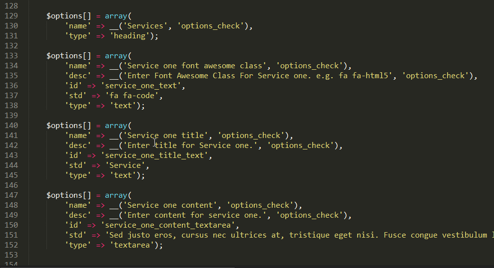

Cinnabar - A Wordrpess Theme Framework Based on Bootstrap 3
- created: 09/08/2014
- latest update: 09/08/2014
- by: PixelDropINC
- email: bsinghs.007@gmail.com
Installation
Step: 1 - Download Framework
Step: 2 - Extract and Upload to server
Now you have your framework files with Zip type and you need to extract this any unzip program (Use Winrar).Extracted files included Framework Documentation & Framework.
Please unzip our only theme file and that will be named like this cinnabarframework.zip, Now please access to your hosting with FTP (Example: Filezilla) then go to youriste/wp-content/themes directory and paste our framework.

The hard part is now out of the way. The next and final step is to activate the theme within your WordPress admin panel.
Step: 3 - Activate Framework
Finished after step 2 now you can go to your Wordpress Website Dashboard then go to Appearance-Themes section and activate our theme. Now you have only left to insert Demo Data insert if you are doing this step you have our demo website like web is ready to your control.

Step: 4 - Install Plugins Notice
When you activate theme you will get the notice to install the required plugins, click begin installing plugins as shown in the fig.

Step: 5 - Actual View

Setup Home Page and Blog page
Click on Page Tab on the left and select all pages & Add Two Pages.

Click on Appearance Tab on the left and select menus & add created pages as menus.

Now go to Settings->Reading & select Front Page & Posts Page as shown below.

Attach Custom Template Section
A demo Custom Template is build in the framework. You can attach it to any page. Here i am attaching it to Home Page. Select Pages->All Pages & edit Home Page

Now Select the template as shown in the figure. Custom Template Location is cinnabarframework/custom_templates/custom-home-template.php

Now See the theme

Theme Options, It will only be available i you have installed the required plugins when you activated the theme framework.
Go to Appearance-> Theme Options

Theme Options can be extened via going to options.php, Like here is an example to add settings & services tab


And they can be used in the custom template by adding this php code

Sources and Credits
CSSs:
- bootstrap.min.css
- fontawesome.min.css
Javascripts:
- bootstrap.min.js
- jquery.min.js
Fonts:
- Open+Sans(google font)
- fontawesome
Others:
- Options Framework
end
Thank you for downloading this framework. I'd be glad to help if you have any questions related to the theme. Just Through me a email at bsinghs.007@gmail.com